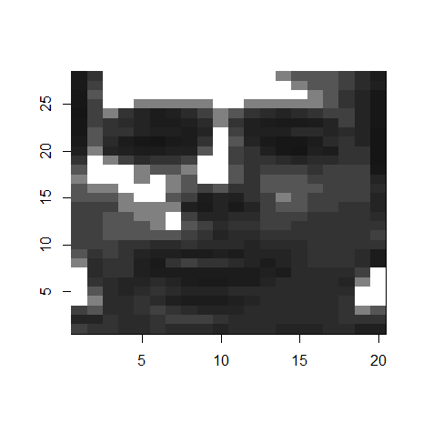
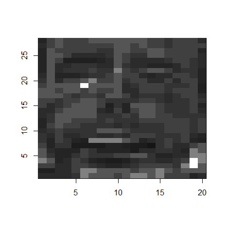

This article retains its original experiments and examples. For current package usage, see the usage guide.
The scale parameter provides some common scaling options
which will be carried out on the input data before further processing
(such as perplexity calibration). The options are:
-
"none"(orFALSEorNULL). Do no scaling. This is the most flexible option because it lets you do your own scaling to the input data outside ofsmallvisand it won’t be further modified. Or maybe you don’t want or need to scale your input data further. -
"scale"(orTRUE). Scales each column of the input data to zero mean and variance = 1. -
"range". Range scales the entire matrix, so the maximum value is 1 and the minimum is 0. -
"absmax". Columns are centered to zero mean, and then divided by the maximum absolute value. This is the scaling used in t-SNE (at least in the original Matlab and Barnes-Hut implementations by Van Der Maaten).
This page gives some results for the effect of t-SNE with different scaling options.
Datasets
See the Datasets page.
Most of the datasets used here are image datasets, where each feature
is a pixel value. In these cases, you may not want to mess with the
relative scales of the different columns of the data, or at least not in
the way that scale = TRUE does, which will “blow up” pixel
regions with little variance to have the same weight in the distance
calculation as a pixel with more variation, and which is therefore more
likely to meaningfully separate different classes. The
"range" and "absmax" settings are therefore
likely to be most appropriate for these sorts of datasets.
Evaluation
Apart from visualizing the results, the mean neighbor preservation of
the 40 closest neighbors is used to provide a rough quantification of
the quality of the result, labelled as mnp@40 in the
plots.
Settings
For settings, apart from changing the scaling option (which would
have been scale = "absmax"), we’ll use those given in the
original
t-SNE paper, except with scaled PCA initialization rather than
random initialization.
res_scale <- svbench(
scale = TRUE,
perplexity = 40,
Y_init = "spca",
eta = 100,
exaggeration_factor = 4,
stop_lying_iter = 50
)
res_scale_range <- svbench(
scale = "range",
perplexity = 40,
Y_init = "spca",
eta = 100,
exaggeration_factor = 4,
stop_lying_iter = 50
)
res_scale_absmax <- svbench(
scale = "absmax",
perplexity = 40,
Y_init = "spca",
eta = 100,
exaggeration_factor = 4,
stop_lying_iter = 50
)
res_scale_none <- svbench(
scale = FALSE,
perplexity = 40,
Y_init = "spca",
eta = 100,
exaggeration_factor = 4,
stop_lying_iter = 50
)Conclusions
The results for "none", "range" and
"absmax" seem identical but are in fact slightly different.
This doesn’t necessarily mean that these will all do the same thing for
any dataset, but at least we don’t have to worry about the effect of the
typical scaling options for the test datasets we will usually be looking
at.
The scale = TRUE results clearly give different results,
and as predicted, it’s not necessarily a great idea to do it to the
image data (mnist particularly suffers). To see the sort of
effect it has on the underlying data, here’s the first frey
face image, unscaled on the left, and after scale = TRUE
has been applied to the entire dataset on the right:
 |
 |
My apologies to Brendan Frey. Nonetheless, scale = TRUE
is a good idea for some datasets, specifically those where each column
is a different measurement using very different scales.
iris is a candidate for this, although as it turns out, the
different columns all have very similar scales, because they are all
length or width measurements of the flower features, and in this case
scaling makes the separation of classes slightly worse.
You may also want to consider the PCA and whitening preprocessing options.